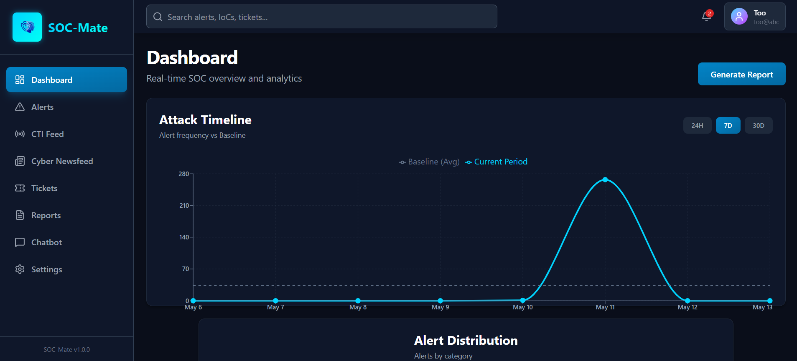
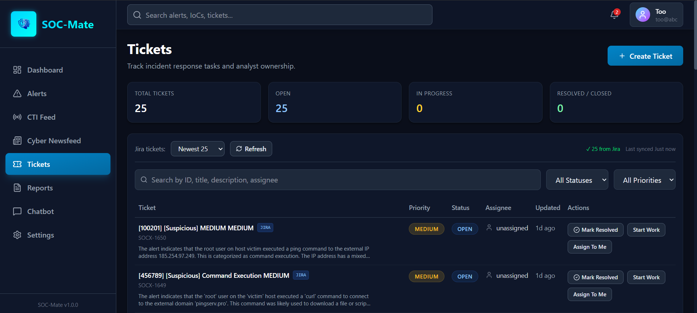

Command center
Built around the daily decisions analysts make.
Monitor attack timelines, review threat context, and move from signal to action with a layout designed for speed — integrating SIEM, AI, and threat intelligence in one system.
// SOC‑Mate · Intelligent Analyst
SOC-Mate is an AI-powered assistant platform for SOC analysts — automating triage, enrichment, rule generation, and incident handling without the noise of a crowded toolchain.

Command center
Monitor attack timelines, review threat context, and move from signal to action with a layout designed for speed — integrating SIEM, AI, and threat intelligence in one system.
AI Chatbot
Handles generic queries and deep analysis — IP reputation, hash lookups, URL scanning, MITRE mapping, and Wazuh rule generation — all in plain English.
// The Reality
Modern security teams face an impossible volume of work. The average analyst sees 4,484 alerts per day — and ignores 67% of them. Delayed responses increase Mean Time to Detect (MTTD) and Mean Time to Respond (MTTR), exposing organizations to greater risk.
SOC analysts face thousands of daily alerts, leading to mental exhaustion and missed critical threats.
Incident triage, rule writing, and phishing analysis are done manually — consuming time and resources.
Traditional detection methods generate excessive false positives, diverting attention from real threats.
Analysts switch between multiple disconnected tools, creating inefficiencies and slow response times.
Repetitive grunt work pushes talented analysts out of the field and degrades team morale.
Raw alerts without enrichment leave teams guessing intent — investigation stalls, risk grows.
// The Solution
SOC-Mate unifies SIEM, threat intelligence, AI reasoning, and incident response into a single intelligent workflow — automating the grunt work so analysts focus on what matters.
Reduce manual work by automating triage, enrichment, and rule generation. Let the AI handle the repetitive steps.
Detect and analyze alerts instantly with AI-augmented analysis. Wazuh SIEM events flow directly into the pipeline.
Seamlessly connect SIEM, CTI, and scanning tools into one ecosystem. No more context-switching between six tabs.
Enable analysts to query data, generate rules, and access reports via the embedded chatbot — in plain English.
Provide always-on, up-to-date CTI feeds on the interface — VirusTotal, AbuseIPDB, MISP, URLhaus and more.
Produce structured reports suitable for analyst handovers and executive consumption — generated on demand.
// Full Capabilities
From AI alert analysis to automated ticketing — SOC-Mate covers the full security operations workflow.
LLM-powered triage that explains every Wazuh SIEM alert in plain language with actionable context.
Live IoC enrichment from VirusTotal, AbuseIPDB, URLhaus & MISP — automatic on every alert.
Auto-classify every incident to tactics, techniques & sub-techniques for structured reporting.
Generate Wazuh / Sigma rules from natural language in seconds, ready to deploy.
Rich incident summaries delivered instantly to the right responders on every alert.
Ask questions, run lookups, generate rules, and classify threats — conversationally.
Auto-create, assign, and track incident tickets end-to-end with no manual input.
On-demand investigation reports and shift-handover summaries — structured and exportable.
Multi-engine scans with consolidated verdicts across all major threat intelligence sources.
Detect expired, weak, or impersonating certificates before they become incidents.
Always-on threat intelligence streams surfaced across the platform for analyst awareness.
Monitor and process multiple cybersecurity news sources for analyst situational awareness.
// Architecture
From raw Wazuh SIEM event to enriched intel, AI reasoning, automated response, and analyst notification — fully orchestrated end-to-end.
// AI Assistant
The SOC-Mate chatbot is a conversational interface to your entire security stack. Ask, investigate, generate, classify — in plain English. Handles generic queries and deep analysis, all within the unified platform.
Operational view
The dashboard pairs live alert timelines with ticket management, CTI feeds, and analyst activity — giving the full operational picture at a glance.

// The Builders
Final Year Project — Department of Cyber-Security, NCSA, Air University Islamabad.